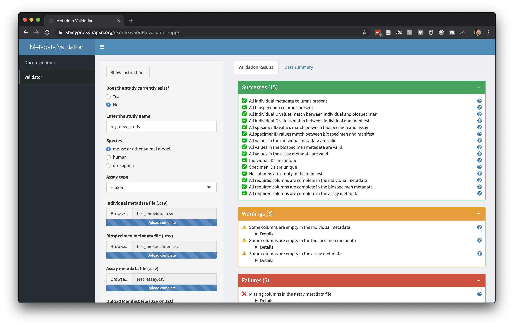
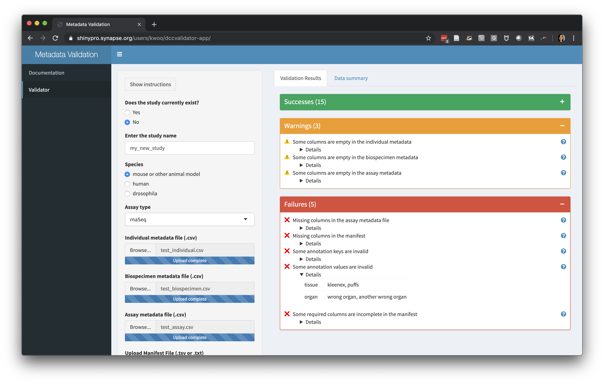

using-the-dccvalidator-app-amp-ad.RmdWe’ve built the dccvalidator tool to streamline the process of data validation and QA/QC. As the AMP-AD Knowledge Portal has grown to 50+ studies and over 70,000 data files, we’ve realized a need to be more standardized in our approaches to data curation. Thus, we built an application that performs many of the routine data quality checks we previously conducted by hand, with the hopes that it will help you, the data contributor, get your data checked, validated, and shared more easily and quickly.
The application can be found at https://shinypro.synapse.org/users/kwoo/dccvalidator-app/
To use this application you must:
Some portions of the app submit data to Synapse. This allows curators at Sage to troubleshoot issues if needed; no one outside the Sage curation team will be able to download the data.
Each study should include metadata that would help a new researcher understand and reuse the data. In most cases, we will expect 4 files:
We provide templates for all of the metadata files within the portal: https://www.synapse.org/#!Synapse:syn18512044
If you don’t see a template for the assay(s) in your study, please get in touch.
Each study in AMP-AD has accompanying documentation in the portal. You can submit your documentation through the dccvalidator app on the Documentation page. There should be a study description for the whole study, and an assay description for each of the assays that was performed. These can be in a single file, or you can upload multiple files to the assay description section.
A screenshot of a website with instructions on how to provide documentation of a study, and a space to upload documentation files
The data validation portion of the app allows you to upload metadata files (as .csv) and the manifest (as .tsv or .txt) and view the results of a series of automated checks.
Examples of the types of checks we perform are:

We also provide a summary of the files you have uploaded, showing the number of individuals, specimens, and files. We visualize the data in each column by its data type to help spot unexpected missing values.
A screenshot showing a summary of several data files uploaded, including how many specimens, individuals, and data files were included, and a breakdown of the types of data in the file